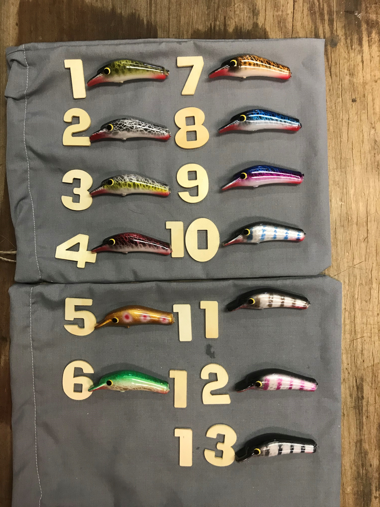

Bargara, Queensland
Lures with a legend behind them.
Ray Broughton designed and built the original RTB Legend Lures. Today he shapes, paints and finishes a new range of timber lures by hand in his Bargara workshop.
- 1991Catching a Legend
- 51Lures in the range
- 40+Years making lures

The range
Three ranges. Fifty-one lures.
Every lure in the catalogue is timber, hand painted and finished one at a time, so no two are exactly alike.


The story
From Mulwala to Bargara.
Back in 1991, while Ray was proprietor of the Mulwala Shoreline Caravan Park, he starred in his video Catching a Legend. After that he started designing and making Legend Lures.
In 1992 he began manufacturing on a large scale. The RTB Legend Lure was famous for catching Murray Cod on Lake Mulwala, and was popular with professional and recreational fishermen alike.
Ray stopped large-scale manufacturing in the mid-90s, but kept making lures for his own fishing. In 2020 he rediscovered his passion and started crafting timber lures again — attractive to look at, swimming perfectly, and built to catch a large variety of fish.
Read the full storyFrom the current range
Pick a few for the tackle box.

What the old guard say
Old lure makers are coming out of the woodwork (pun intended). Latest blast from the past is Ray Broughton... Ray's a terrific bloke and a very talented lure designer/crafter. He's easing back into it.... and he's working in wood! Gotta love that!Steve Starling — Starlo's Fishtopia, Facebook
Why timber
No two pieces of timber are the same.
Lures were traditionally made either with timber or metal. Then over time came the mass-produced plastic lures.
Timber lures work so much better than plastic as no two pieces of timber are the same. When using lures it's about attracting the fish to strike. With timber lures one's action may not attract a fish, however the next lure will move slightly differently, float a little more or less, and this attracts fish.
Every single lure that Ray makes is unique and no two lures will be the same.
Made in Bargara
Hand painted, one at a time.
Decades of knowledge — and testing what does and does not work — goes into deciding colours, though lures can be custom painted. Ray's passion and experience in making lures that attract fish is a skill honed over more than 40 years.
Talk to Ray about a customOrders and enquiries
Ray loves to talk lures.
Call him to talk through the range, check what's on the bench, or sort out postage. Every order is confirmed personally.
raytb@me.com · Bargara, Queensland